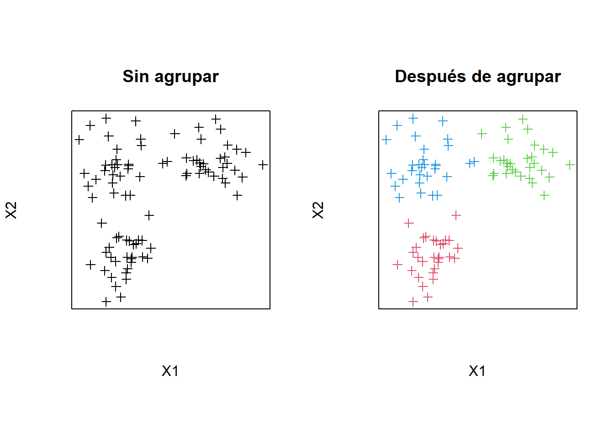
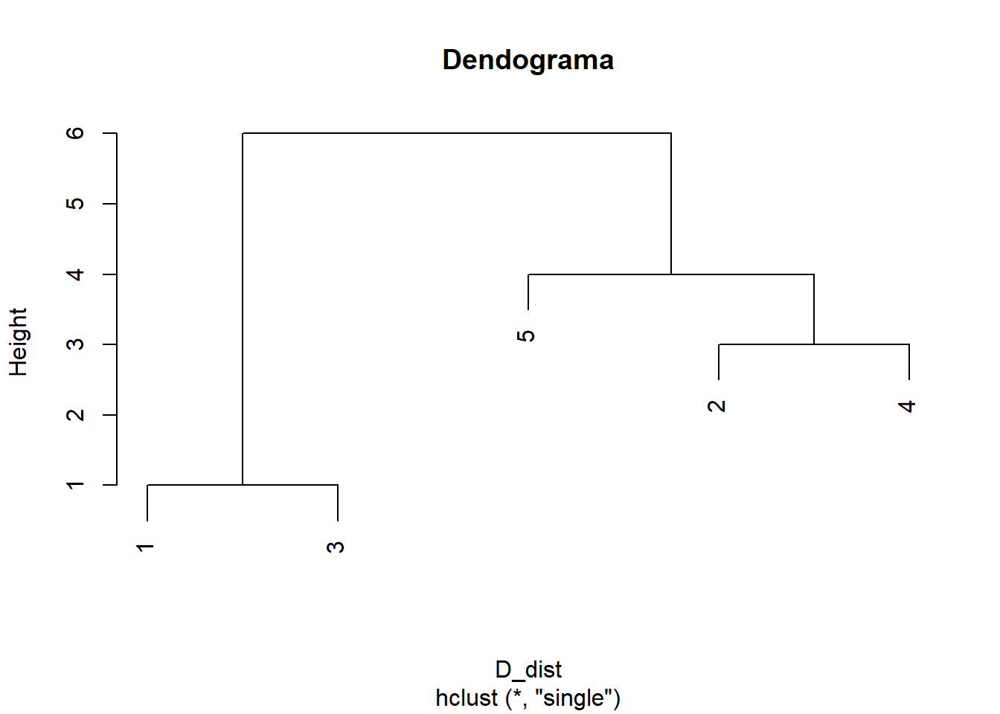
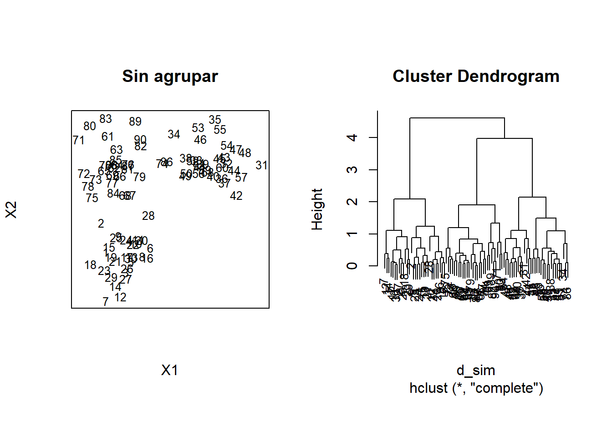
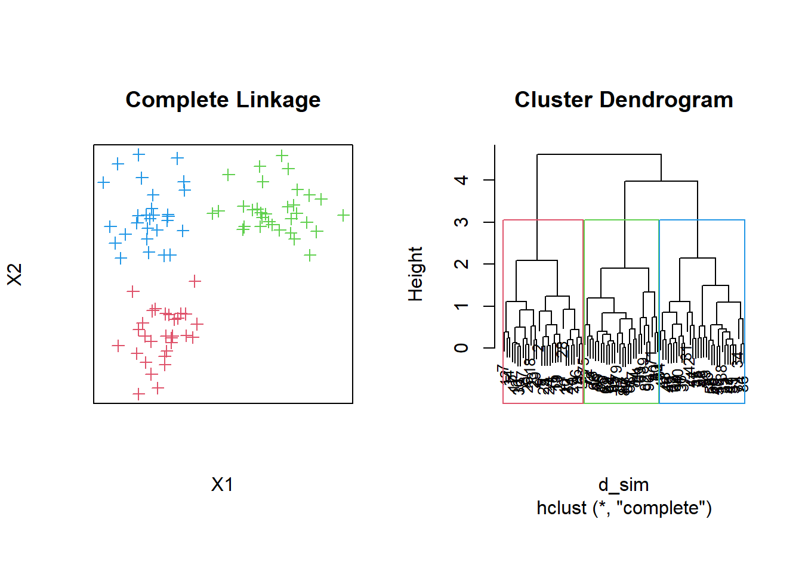
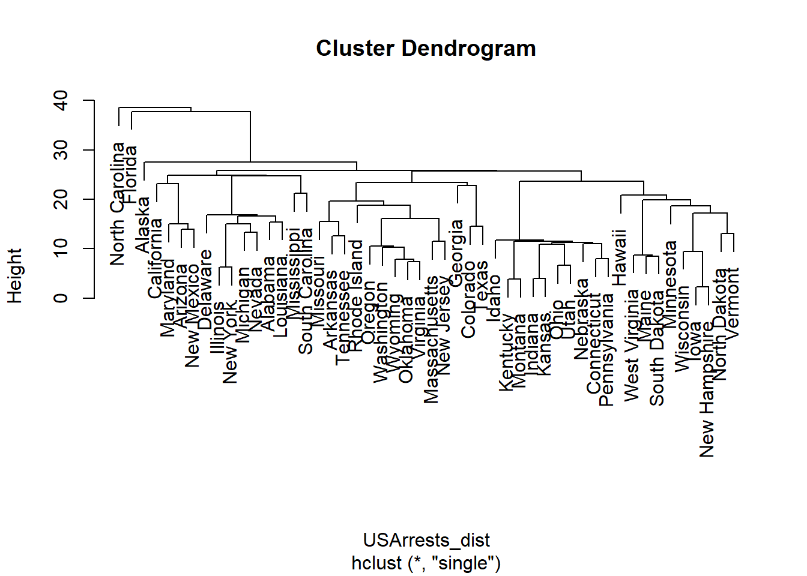
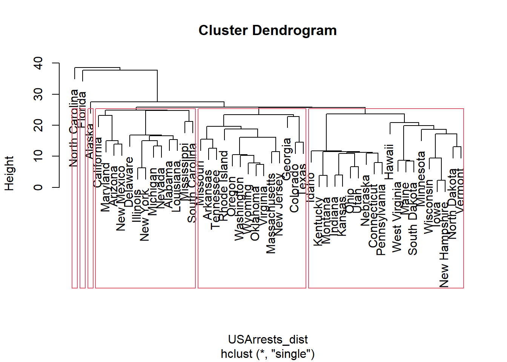

Este documento trabaja el análisis de grupos como una ténica de aprendizaje no supervisado. Se consideran métodos no supervisados porque las observaciones no tienen una clasificación a priori. En lugar de ello queremos ver si las observaciones se agrupan de manera natural.
Dadas las observaciones \(\mathbf{x_1}\), …, \(\mathbf{x_n}\), que pertenecen a \(\mathbb{R}^d\) queremos agruparlos de manera que:
Esto requiere dos cosas:
Una manera de crear los grupos es utilizando métodos de particionamiento, como por ejemplo árboles de decisión o bosques aleatorios. Estos métodos tiene la ventaja de poder considerar simultáneamente variables cualitativas y cuantitativas. En este documento nos enfocaremos en los métodos de agrupamiento jerárquico y K-means.
La siguiente figura ilustra el objetivo del agrupamiento:

Comenzaremos por tratar la noción de similaridad. En términos matemáticos, dos observaciones son similares si están cerca en términos de una función de distancia. De esta manera las nociones de cercanía y similaridad son prácticamente equivalentes en el análisis de grupos.
Una distancia en \(\mathbb{R}^d\) es una función \(d: \mathbb{R}^d \times \mathbb{R}^d \rightarrow [0,+\infty)\) tal que para las observaciones \(\mathbf{x_1}\), \(\mathbf{x_2}\) y \(\mathbf{x_3}\), entonces:
La similaridad se define en términos de una función de distancia y la disimilaridad en términos de la similaridad.
Ejemplos de medidas de similaridad son la aplicación de las normas conocidas sobre la diferencia entre dos observaciones:
En estos métodos los grupos más cercanos se fusionan, por lo que es necesario definir la distancia entre grupos. Algunas distancias entre grupos son \(G_1\) y \(G_2\):
Si se tienen \(n\) observaciones \(\mathbf{x_1}\), …, \(\mathbf{x_n}\), se comienza con \(n\) grupos y con la matriz de distancias \(D=(d_{ij})=d(\mathbf{x}_i,\mathbf{x}_j)\). En este método se “aglomeran” las observaciones, es decir que si varias observaciones se agrupan entonces ellas se reemplazan por una nueva observación que las represente (i.e el promedio de todas ellas).
Como se dijo antes, se comienza con \(n\) grupos donde cada observación es un grupo. A partir de esto los pasos son los siguientes:
Consideremos la siguiente matriz de distancias:
## 1 2 3 4 5
## 1 0 7 1 9 8
## 2 7 0 6 3 5
## 3 1 6 0 8 7
## 4 9 3 8 0 4
## 5 8 5 7 4 0## G13 2 4 5
## G13 0 6 8 7
## 2 6 0 3 5
## 4 8 3 0 4
## 5 7 5 4 0## G13 G24 5
## G13 0 6 5
## G24 6 0 4
## 5 5 4 0## G12 G245
## G12 0 5
## G245 5 0Podemos representar esto con ayuda de un dendograma, así:
D_dist=as.dist(D)
d_tree=hclust(D_dist,method="single")
plot(d_tree, main="Dendograma")
d_sim <- dist(posiciones)
d_sim_clust <- hclust(d_sim)
d_sim_grupos <- cutree(d_sim_clust,k=3)par(pty="s",mfrow=c(1,2))
plot(posiciones,pch=NA,xaxt='n',yaxt='n',xlab="X1",ylab="X2",main="Sin agrupar")
text(posiciones,labels=as.character(1:(n1+n2+n3)),cex=0.8)
plot(d_sim_clust,cex=0.8)
par(pty="s",mfrow=c(1,2))
plot(posiciones,pch=3,xaxt='n',yaxt='n',xlab="X1",ylab="X2",main="Complete Linkage",col=d_sim_grupos+1)
# text(posiciones,labels=as.character(1:(n1+n2+n3)),cex=0.8)
plot(d_sim_clust,cex=0.8)
rect.hclust(d_sim_clust, k = 3, border = c(1:3)+1)
Consideremos la base de datos USArrest que contiene información tasas de crímene en ciudades de Estados Unidos:
data("USArrests")
head(USArrests)## Murder Assault UrbanPop Rape
## Alabama 13.2 236 58 21.2
## Alaska 10.0 263 48 44.5
## Arizona 8.1 294 80 31.0
## Arkansas 8.8 190 50 19.5
## California 9.0 276 91 40.6
## Colorado 7.9 204 78 38.7Apliquemos la metodología anterior:
USArrests_dist=dist(USArrests)
USArrests_clust=hclust(USArrests_dist,method="single")
plot(USArrests_clust)
Si queremos segmentar el conjunto de ciudades, por ejemplo en seis grupos, podemos proceder así:
USArrests_clust_4=cutree(USArrests_clust,k=6)
plot(USArrests_clust)
rect.hclust(USArrests_clust,k=6)
K-medias es un método no determinístico.En estos métodos se opera con la noción de centroide. El centroide es el representante de cada grupo. El número de grupos es definido de antemano por el usuario.
En términos generales el algoritmo de K-medias se puede plantear así:
Dentro de los criterios de parada se tiene por ejemplo alcanzar un número máximo de iteraciones (recálculo de centroides) o que las observaciones se asignen a los mismos grupos (todas o un alto porcentaje).
Para el cálculo de los centroides han diferentes alternativas. Una bastante común es calcular el centroide como el promedio de las observaciones del grupo.
Veamos la aplicación de K-meadias al mismo problema: USArrest:
usarrest <- kmeans(USArrests,3)Los grupos obtenidos se muestran a continuación:
usarrest$cluster## Alabama Alaska Arizona Arkansas California
## 3 3 3 2 3
## Colorado Connecticut Delaware Florida Georgia
## 2 1 3 3 2
## Hawaii Idaho Illinois Indiana Iowa
## 1 1 3 1 1
## Kansas Kentucky Louisiana Maine Maryland
## 1 1 3 1 3
## Massachusetts Michigan Minnesota Mississippi Missouri
## 2 3 1 3 2
## Montana Nebraska Nevada New Hampshire New Jersey
## 1 1 3 1 2
## New Mexico New York North Carolina North Dakota Ohio
## 3 3 3 1 1
## Oklahoma Oregon Pennsylvania Rhode Island South Carolina
## 2 2 1 2 3
## South Dakota Tennessee Texas Utah Vermont
## 1 2 2 1 1
## Virginia Washington West Virginia Wisconsin Wyoming
## 2 2 1 1 2Los centroides se obtienen así:
usarrest$centers## Murder Assault UrbanPop Rape
## 1 4.270000 87.5500 59.75000 14.39000
## 2 8.214286 173.2857 70.64286 22.84286
## 3 11.812500 272.5625 68.31250 28.37500¿Cómo seleccionar el número apropiado de grupos? Pista: en K-medias esto se puede obtener a partir de la estabilidad de los grupos al cambiar las condiciones iniciales. También se puede identificar la variación entre grupos e intragrupos como una función del número de grupos.
¿Cómo visualizar los grupos cuando cada individuo está representado por dos o más variables?